Peter Parker: Spider-Man (1998 - 2003)
| Comic Book | Release Date | Cover |
|---|---|---|
| Peter Parker: Spider-Man #1 Power Without Responsibility! |  | |
| Peter Parker: Spider-Man #2 Plaything of the Gods | 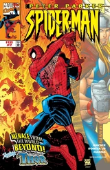 | |
| Peter Parker: Spider-Man #3 Eyewitness | 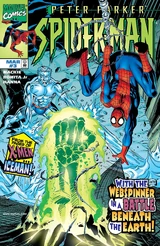 | |
| Peter Parker: Spider-Man #4 Beneath it all | 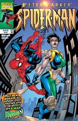 | |
| Peter Parker: Spider-Man #5 The Trouble With Girls | 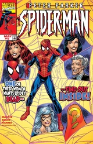 | |
| Peter Parker: Spider-Man #6 The whys have it! | 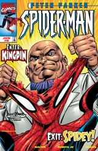 | |
| Peter Parker: Spider-Man #7 Creatures of the Night | 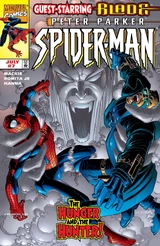 | |
| Peter Parker: Spider-Man #8 Blood Feud | 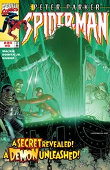 | |
| Peter Parker: Spider-Man #9 Shadows of the Past | 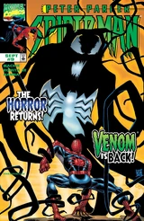 | |
| Peter Parker: Spider-Man #10 Venom Triumphant | 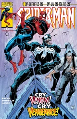 | |
| Peter Parker: Spider-Man #11 An Exemplary Day! | 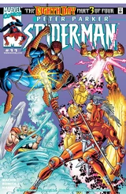 | |
| Peter Parker: Spider-Man #12 Another Return of the Sinister Six, Part 2 of 2 | 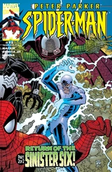 | |
| Peter Parker: Spider-Man #13 Living in oblivion! | 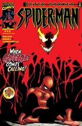 | |
| Peter Parker: Spider-Man #14 Denial | 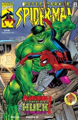 | |
| Peter Parker: Spider-Man #15 Bring me the Head of Spider-Man! | 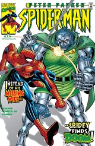 | |
| Peter Parker: Spider-Man #16 Cliché | 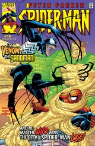 | |
| Peter Parker: Spider-Man #17 Night of the Hunters | 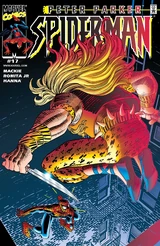 | |
| Peter Parker: Spider-Man #18 The Curse of Spider-Man? | 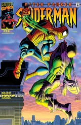 | |
| Peter Parker: Spider-Man #19 The Box | 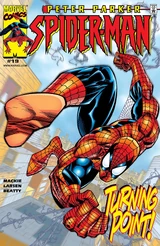 | |
| Peter Parker: Spider-Man #20 The Best Medicine | 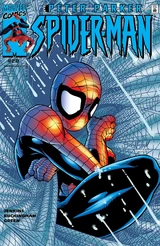 | |
| Peter Parker: Spider-Man #21 A Day in the Life | 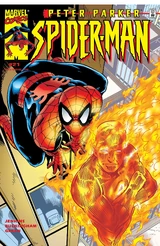 | |
| Peter Parker: Spider-Man #22 Days of our lives | 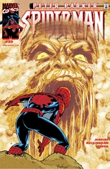 | |
| Peter Parker: Spider-Man #23 Read 'em and weep | 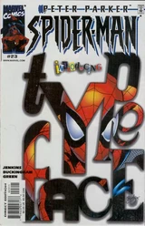 | |
| Peter Parker: Spider-Man #24 Warning Signs | 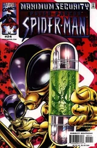 | |
| Peter Parker: Spider-Man #25 Trick of the Light | 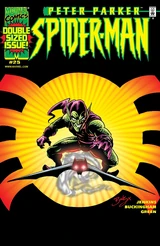 | |
| Peter Parker: Spider-Man #26 Police Story | 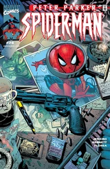 | |
| Peter Parker: Spider-Man #27 Getting Ahead | ||
| Peter Parker: Spider-Man #28 Field of Dream | 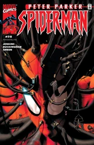 | |
| Peter Parker: Spider-Man #29 Destinations | ||
| Peter Parker: Spider-Man #30 Three Hundred | 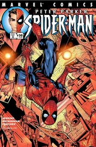 | |
| Peter Parker: Spider-Man #31 One Small Break | 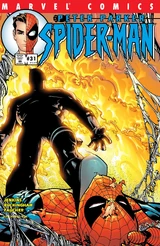 | |
| Peter Parker: Spider-Man #32 Never Forever | 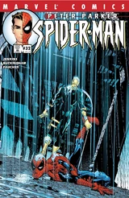 | |
| Peter Parker: Spider-Man #33 Maybe Next Year | 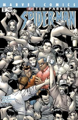 | |
| Peter Parker: Spider-Man #34 If Thine Eyes Offend Thee... | 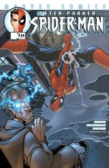 | |
| Peter Parker: Spider-Man #35 Heroes don't cry | 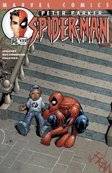 | |
| Peter Parker: Spider-Man #36 The Big Score | 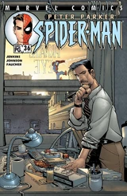 | |
| Peter Parker: Spider-Man #37 Snow Day | 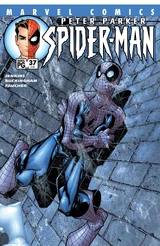 | |
| Peter Parker: Spider-Man #38 Make Mime Marvel! | 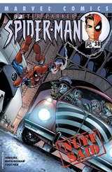 | |
| Peter Parker: Spider-Man #39 Operation Octopus | 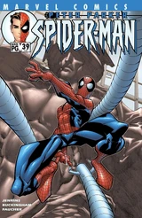 | |
| Peter Parker: Spider-Man #40 Codename: John Hancock | 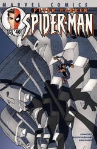 | |
| Peter Parker: Spider-Man #41 Mission: Uncomfortable | 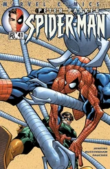 | |
| Peter Parker: Spider-Man #42 Fifteen Minutes of Shame: Part 1 | 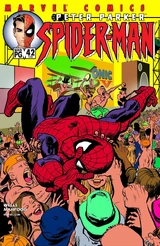 | |
| Peter Parker: Spider-Man #43 Fifteen Minutes of Shame: Part 2 | 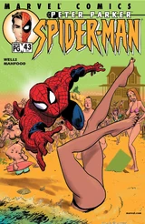 | |
| Peter Parker: Spider-Man #44 A Death in the Family Part One | 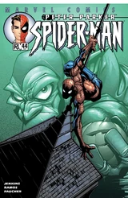 | |
| Peter Parker: Spider-Man #45 A Death in the Family Part Two | 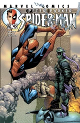 | |
| Peter Parker: Spider-Man #46 A Death in the Family Part Three | 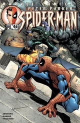 | |
| Peter Parker: Spider-Man #47 A Death in the Family Part Four | 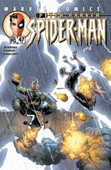 | |
| Peter Parker: Spider-Man #48 The Big Question | 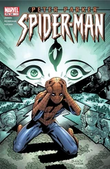 | |
| Peter Parker: Spider-Man #49 The Big Answer | 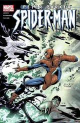 | |
| Peter Parker: Spider-Man #50 And here, my troubles begin... | 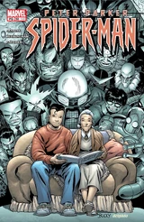 | |
| Peter Parker: Spider-Man #51 Just another manic Monday: Part One | 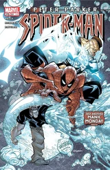 | |
| Peter Parker: Spider-Man #52 Part Two: Everybody's workin' for the weekend | 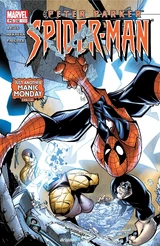 | |
| Peter Parker: Spider-Man #53 Rules of the Game: Part One | 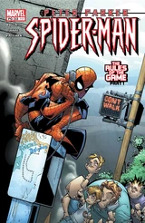 | |
| Peter Parker: Spider-Man #54 Part Two: Boys and Their Toys | ||
| Peter Parker: Spider-Man #55 Rules of the Game: Part Three | ||
| Peter Parker: Spider-Man #56 Reborn: Part One | ||
| Peter Parker: Spider-Man #57 Reborn: Part Two |